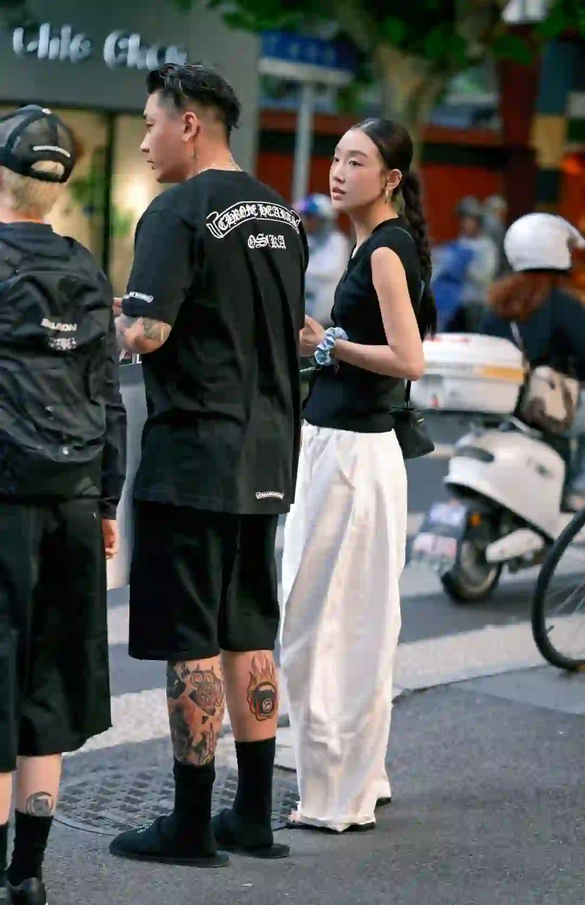
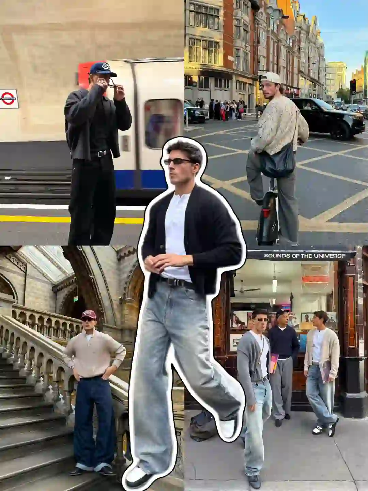
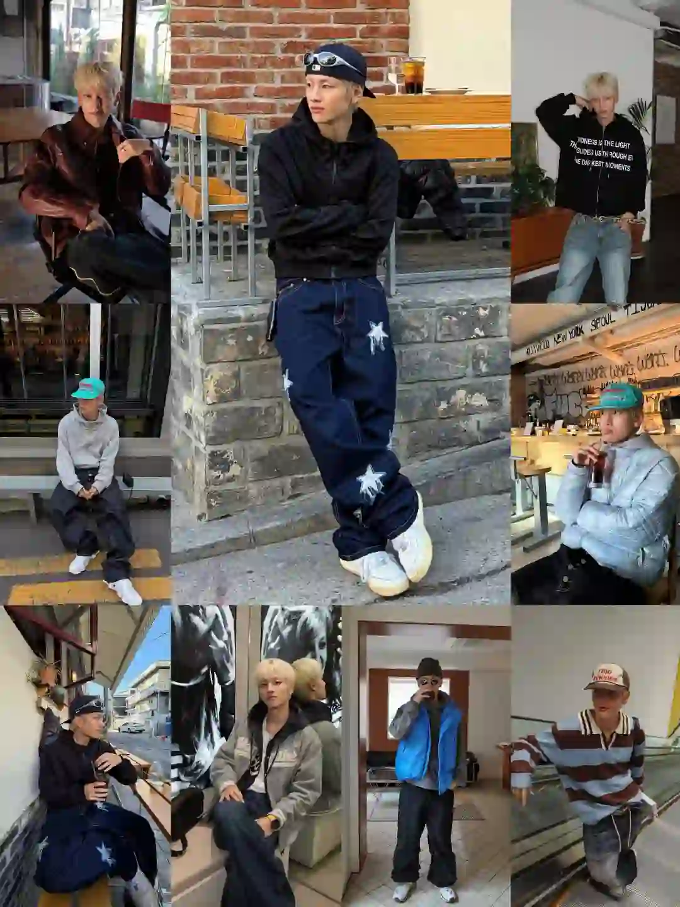
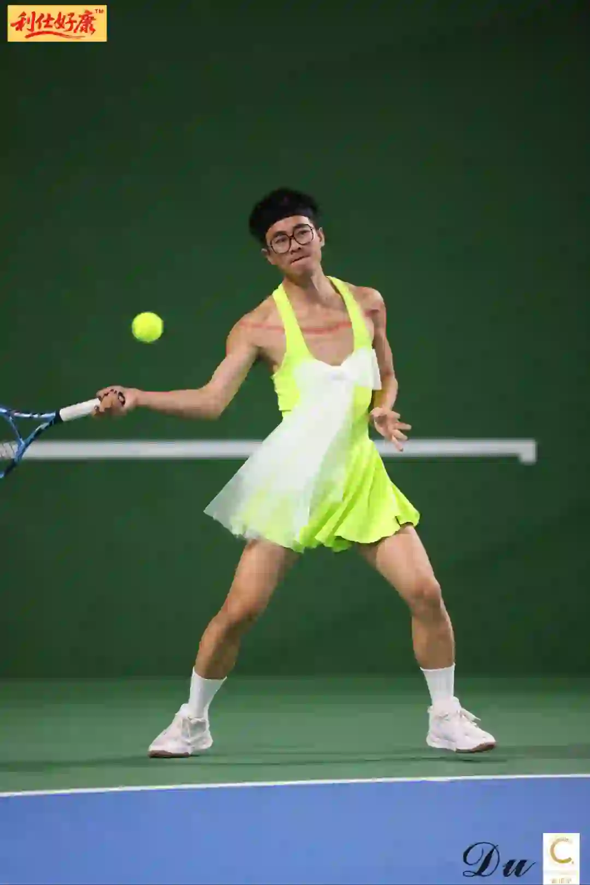
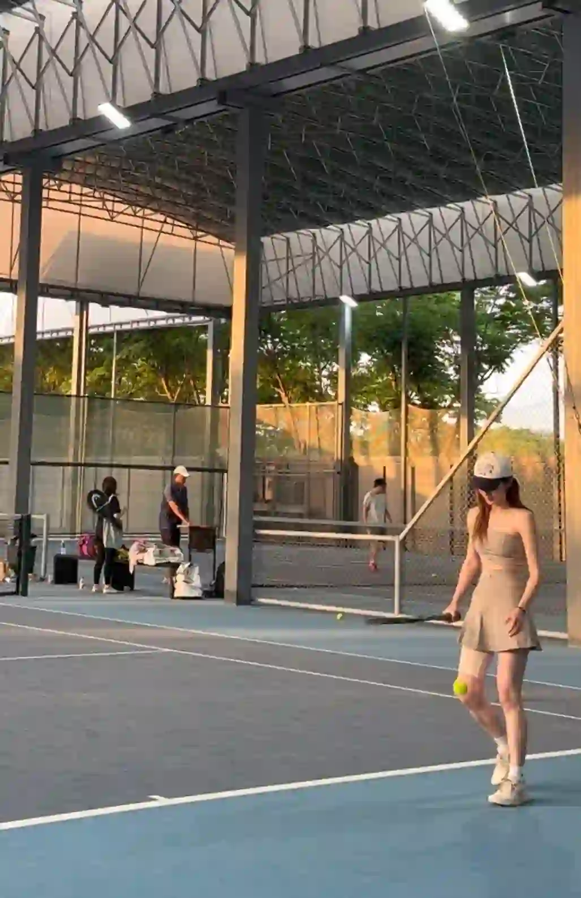

2026年3月29日
03月29日报告
生成时间：2026-03-29 · 范围：时尚 / 穿搭 / 网球
今日参考账号：Smile May / 设计灵感站 / Shanghai sights
今日高信号标题：审美提升｜Juan Carlos Beltrán ｜ ✨审美积累丨排版不是文字大才吸睛 ｜ 上海秋冬男士街拍年度18图（秋冬篇）
竞品策略变化：未命中监控竞品样本
今日高信号标题：审美提升｜Juan Carlos Beltrán ｜ ✨审美积累丨排版不是文字大才吸睛 ｜ 上海秋冬男士街拍年度18图（秋冬篇）
竞品策略变化：未命中监控竞品样本

时尚 · 01
审美提升｜Juan Carlos Beltrán
⭐ 1533
👍 5015
今天可学
- 内容结构：文字卡 + 18图，更像资料型合集
- 收藏效率高，说明用户把它当成可复用模板/知识卡，不只是刷到即过
- 正文入口：西班牙视觉艺术家Juan Carlos Beltrán，以AI技术与实拍影像的无缝融合为创作支点，凭借极具张力的色彩对比构建超现实视觉奇观，他将真实人像、自然肌理与AI生成的奇幻场…
- 标签聚焦：#审美 / #审美积累 / #审美提升 / #摄影
时尚 · 02
✨审美积累丨排版不是文字大才吸睛
⭐ 884
👍 1021
今天可学
- 内容结构：文字卡 + 18图，更像资料型合集
- 收藏效率高，说明用户把它当成可复用模板/知识卡，不只是刷到即过
- 正文入口：分享一组JOE DIVER的版式设计作品，文字排版，不是字体越大越好，错落有致的视觉韵律更吸睛。 #英文字体 #高级感排版 #设计美学 #审美积累 #平面设…
- 标签聚焦：#英文字体 / #高级感排版 / #设计美学 / #审美积累

时尚 · 03
上海秋冬男士街拍年度18图（秋冬篇）
⭐ 613
👍 2808
今天可学
- 内容结构：人物 + 18图，更像资料型合集
- 收藏效率高，说明用户把它当成可复用模板/知识卡，不只是刷到即过
- 评论活跃，适合加入观点冲突、对比案例或常见误区来拉讨论
- 标签聚焦：#城市氛围感穿搭 / #ootd每日穿搭 / #上海街拍 / #街拍穿搭

时尚 · 04
盘点上海夏季街头简约随性高级感穿搭分享
⭐ 406
👍 4301
今天可学
- 内容结构：人物 + 4图，更像单点表达
- 点赞高于收藏，偏流量型曝光内容，不值得原样照抄
- 评论活跃，适合加入观点冲突、对比案例或常见误区来拉讨论
- 标签聚焦：#上海街拍 / #Ootd / #日常穿搭 / #今天穿什么香
时尚 · 05
“秀场积累”Emporio Armani 26秋冬时装秀
⭐ 574
👍 1076
今天可学
- 内容结构：未判定 + 0图，更像单点表达
- 收藏效率高，说明用户把它当成可复用模板/知识卡，不只是刷到即过
- 正文入口：（正文为空或未取到）
时尚赛道今日方法论
- 样本依据：审美提升｜Juan Carlos Beltrán / ✨审美积累丨排版不是文字大才吸睛
- 当天结构信号：文字卡封面 + 18图 最强；优先学习样本 4 条，低收藏流量样本 1 条。
- 时尚赛道今天跑出来的是“审美判断 + 资料感整理”：像 ✨审美积累丨排版不是文字大才吸睛 这类高收藏样本，核心不是讲步骤，而是把趋势、风格线索和案例并排给足，用户才愿意以 86.6% 的收藏率反复回看。
- 执行建议：标题先抛出趋势/风格判断，再给明确收益；正文少讲空泛氛围，多给风格标签、对照案例和可复看的视觉结论，让内容更像灵感资料卡。
- 反例提醒：盘点上海夏季街头简约随性高级感穿搭分享 点赞高但收藏低，说明这类曝光型内容能带流量，不适合直接当明日主打法。
今日参考账号：林小花 / BongBong club / 查理叔叔
今日高信号标题：2025年度穿搭合集✨做自己的美丽主理人 ｜ Ootd|谁还没爱上90s慵懒风穿搭 ｜ 👨🏻40+叔叔｜5套男生穿搭学会蓝色搭卡其色
竞品策略变化：未命中监控竞品样本
今日高信号标题：2025年度穿搭合集✨做自己的美丽主理人 ｜ Ootd|谁还没爱上90s慵懒风穿搭 ｜ 👨🏻40+叔叔｜5套男生穿搭学会蓝色搭卡其色
竞品策略变化：未命中监控竞品样本

穿搭 · 01
2025年度穿搭合集✨做自己的美丽主理人
⭐ 1600
👍 8238
今天可学
- 内容结构：文字卡 + 18图，更像资料型合集
- 收藏与点赞较平衡，可学选题包装，但仍需补强可执行细节
- 评论活跃，适合加入观点冲突、对比案例或常见误区来拉讨论
- 正文入口：恍恍惚惚一年的时间就这样匆匆忙忙连滚带爬地结束了 这一组春夏秋冬的年度穿搭合集 不知道大家又是从哪一张照片关注小花的呢？ 回想过去每一年的成长好像都要伴随着一些失去 但庆幸的是总是…
- 标签聚焦：#2025回顾我的主理人时刻 / #时髦主理人 / #ootd每日穿搭 / #超会穿企划

穿搭 · 02
Ootd|谁还没爱上90s慵懒风穿搭
⭐ 1241
👍 2672
今天可学
- 内容结构：产品 + 9图，更像资料型合集
- 收藏效率高，说明用户把它当成可复用模板/知识卡，不只是刷到即过
- 正文入口：伦敦街头的复古型男图鉴 在伦敦的街头巷尾，总能捕捉到把复古风穿得毫不费力的型男们🌆 从地铁月台的黑色系极简风，到街头独有的粗针毛衣+阔腿裤组合，再到博物馆建筑前的大地色针织衫+单宁…
- 标签聚焦：#伦敦街拍 / #复古穿搭 / #男士穿搭 / #90s风格
穿搭 · 03
👨🏻40+叔叔｜5套男生穿搭学会蓝色搭卡其色
⭐ 847
👍 1228
今天可学
- 内容结构：人物 + 0图，更像单点表达
- 收藏效率高，说明用户把它当成可复用模板/知识卡，不只是刷到即过
- 正文入口：（正文为空或未取到）
穿搭 · 04
秋日休闲氛围感穿搭 | 实用主义的长期选择
⭐ 540
👍 751
今天可学
- 内容结构：人物 + 0图，更像单点表达
- 收藏效率高，说明用户把它当成可复用模板/知识卡，不只是刷到即过
- 正文入口：（正文为空或未取到）

穿搭 · 05
他真的好会穿！都市男生的百搭教科书
⭐ 414
👍 1321
今天可学
- 内容结构：文字卡 + 9图，更像资料型合集
- 这条流量带有明显外部加成，只拆内容结构与包装，不原样复制流量来源
- 正文入口：如果要给 _dong.su 的穿搭总结一个关键词，就是“百搭不平庸”。作为潮流玩家，他的造型简洁实用，但从不流于大众。他善用韩系高街品牌混搭，既有基本款，又时不时用Oversize…
- 标签聚焦：#潮流REDVibe / #ootdinspo / #潮流POV / #每天一个穿搭灵感
穿搭赛道今日方法论
- 样本依据：Ootd|谁还没爱上90s慵懒风穿搭 / 👨🏻40+叔叔｜5套男生穿搭学会蓝色搭卡其色
- 当天结构信号：文字卡封面 + 9图 最强；优先学习样本 3 条，低收藏流量样本 0 条。
- 穿搭赛道今天最有效的是“整套可抄作业方案”：高收藏样本 秋日休闲氛围感穿搭 | 实用主义的长期选择 说明，只要场景清楚、look 数量够多、搭配结果一眼能看懂，就更容易拿到 71.9% 级别的收藏反馈。
- 执行建议：优先做通勤/职业/一周不重样/套装盘点这类清单式内容；封面先给完整上身结果，图组里再拆单品变化和搭配理由，不要只发单套氛围图。
- 风险提醒：他真的好会穿！都市男生的百搭教科书 已标记为 [不可复制]，只拆结构，不作为明日选题原样跟进。
今日参考账号：Takuya Komura 小村拓也 / 加减法 / wowfrank
今日高信号标题：attack tennis 🎾 ｜ 网球真开心 ｜ 网球穿搭分享🎾
竞品策略变化：未命中监控竞品样本
今日高信号标题：attack tennis 🎾 ｜ 网球真开心 ｜ 网球穿搭分享🎾
竞品策略变化：未命中监控竞品样本
网球 · 01
attack tennis 🎾
⭐ 945
👍 4341
今天可学
- 内容结构：未判定 + 0图，更像单点表达
- 收藏效率高，说明用户把它当成可复用模板/知识卡，不只是刷到即过
- 正文入口：（正文为空或未取到）
网球 · 02
网球真开心
⭐ 238
👍 4256
今天可学
- 内容结构：未判定 + 0图，更像单点表达
- 点赞高于收藏，偏流量型曝光内容，不值得原样照抄
- 评论活跃，适合加入观点冲突、对比案例或常见误区来拉讨论
- 正文入口：（正文为空或未取到）
网球 · 03
网球穿搭分享🎾
⭐ 667
👍 1724
今天可学
- 内容结构：人物 + 0图，更像单点表达
- 收藏效率高，说明用户把它当成可复用模板/知识卡，不只是刷到即过
- 评论活跃，适合加入观点冲突、对比案例或常见误区来拉讨论
- 正文入口：（正文为空或未取到）

网球 · 04
谁能赢蔷薇这套OOTD?
⭐ 29
👍 268
今天可学
- 内容结构：人物 + 9图，更像资料型合集
- 收藏与点赞较平衡，可学选题包装，但仍需补强可执行细节
- 评论活跃，适合加入观点冲突、对比案例或常见误区来拉讨论
- 正文入口：致敬大坂直美！
- 标签聚焦：#网球热土 / #网球比赛 / #网球穿搭 / #网球的魅力

网球 · 05
劝大家私生活干净点
⭐ 119
👍 712
今天可学
- 内容结构：人物 + 4图，更像单点表达
- 收藏与点赞较平衡，可学选题包装，但仍需补强可执行细节
- 评论活跃，适合加入观点冲突、对比案例或常见误区来拉讨论
- 正文入口：染上了🎾瘾 私生活混乱 到处约人 戒又戒不掉 又特别烧钱 这辈子毁了 大家一定要洁身自好不要像我一样
- 标签聚焦：#网瘾是网球的网 / #喂打球吗 / #网球热土 / #网球
网球赛道今日方法论
- 样本依据：attack tennis 🎾 / 网球穿搭分享🎾
- 当天结构信号：人物封面 + 0图 最强；优先学习样本 2 条，低收藏流量样本 1 条。
- 网球赛道今天胜出的不是热闹球场感，而是“动作纠错/装备收益/新手可执行”：高收藏样本 网球穿搭分享🎾 证明，只要用户能马上拿去练，收藏率就能来到 38.7%。
- 执行建议：标题写清动作部位、错误修正或装备收益；内容里给慢动作、步骤和上场场景。明星/赛事样本只借包装，不把热点本身当方法论。
- 反例提醒：网球真开心 点赞高但收藏低，说明这类曝光型内容能带流量，不适合直接当明日主打法。
- 自动抽取规则：仅收录收藏率 >20% 且未被标记为 [不可复制] 的标题模板
- 写入目标：/Users/zhangxiaosong/shared/context/xhs-knowledge/topics/title-templates.md
- 把今天高收藏、高可复制的打法优先塞进明日发帖计划
- 竞品若连续两天从展示型转向教程/资料型，单独开策略变更记录
- 对被标注 [不可复制] 的样本，只拆结构，不抄流量来源